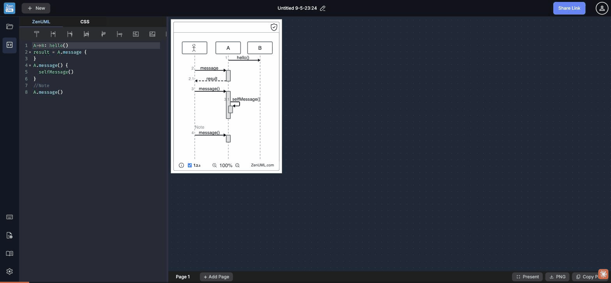

Test scenario: New Diagram Creation Flow — blank vs template, discoverability, silent data loss · ZenUML Web Sequence · 2026-05-10
The new-diagram modal offers two paths: "Start a blank creation" (outlined button, prominent) and 4 style-named templates. Clicking "Start a blank creation" does not open an empty editor — it loads an 18-line pre-filled BookLibService / Session / BookRepository example with try/catch/finally blocks. The label is an outright misrepresentation of what the action does.
Meanwhile, selecting the "Blue" template silently replaces any unsaved work with a complex multi-participant order management system — with no confirmation dialog and no save warning. The only indication is a brief toast: "Advanced was forked" — developer jargon that tells non-technical users nothing.

The most prominent call-to-action in the new-diagram modal is labeled "Start a blank creation" with an outlined button style that implies a primary action. Clicking it loads a pre-written example: BookLibService calling Session.findBooks() and BookRepository with try/catch/finally — 18 lines of code involving 4 participants. A new user who wants a blank canvas is immediately confronted with unfamiliar example code they must manually delete before starting their own work.
The 4 templates (Basic, Black & White, Blue, StarUML) show only a small icon representing the visual style (color scheme, line thickness). There is no way to preview the content of each template before clicking. Testing revealed that "Blue" is actually an internal template named "Advanced" — a multi-participant order management system with OrderService, PaymentService, InventoryService. Users who pick "Blue" because they want a blue color scheme get a complex business flow they didn't expect. Template selection is a blind commitment.
Selecting any template or "Start a blank creation" immediately replaces the current diagram without checking for unsaved changes. During testing, the active editor contained the "(Forked) Advanced" diagram — work that had just been created. Clicking "Start a blank creation" discarded it instantly, with no confirmation dialog, no "Save changes?" prompt, and no undo path back to the previous state. The only indication anything happened was a toast: "New item created." Any user who clicked "+ New" by accident or curiosity loses their work permanently.
When a template is selected, the toast notification reads: "Advanced was forked". The term "forked" is borrowed from software version control (git fork) and means nothing to non-developer users. A marketing designer, business analyst, or student would not know what "forked" means in this context — does it mean copied, modified, saved, broken? Even technical users might expect "forked" to mean the template remains linked to an upstream source they can pull updates from (as in GitHub forks). The term is misleading and alienating to a broad user base.
The new-diagram modal contains a social media call-to-action asking users to tweet about ZenUML. This appears directly alongside the template selection UI, competing for visual attention in a context where the user has a specific goal: create a new diagram. Embedding marketing asks inside task-completion flows violates the single-responsibility principle of UI screens and creates cognitive friction at the worst possible moment — when the user is about to start working.
The template library offers 4 options: Basic, Black & White, Blue, StarUML. All 4 appear to be style variants of the same or similar content — they differentiate by color scheme and visual style, not by use case or domain. There are no domain-specific starter templates for common sequence diagram scenarios: API authentication flow, microservices communication, e-commerce checkout, CI/CD pipeline, user login sequence, WebSocket handshake. These are the diagrams developers actually draw most often.